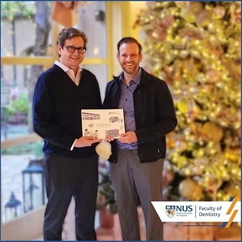

IADR Board of Directors Meeting
A/P Rosa joined the International Association for Dental Research leadership in Pasadena, California, to discuss the association’s present and future.

A/P Rosa joined the International Association for Dental Research leadership in December 2022 in Pasadena, California, to discuss the association’s present and future.
On the same occasion, A/P Rosa had the chance to give to the CEO of the International Association for Dental Research, Mr. Christopher Fox, the book that celebrates the more than 90 years of history of the NUS Faculty of Dentistry. The book is available in the prestigious IADR library, located at the headquarters of IADR in Alexandria, VA.